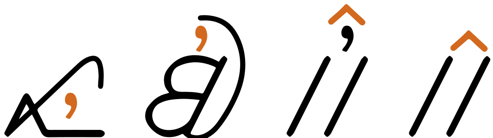

This page brings together basic information about the Garay script and its use for the Wolof language. It aims to provide a brief, descriptive summary of the modern, printed orthography and typographic features, and to advise how to write Wolof using Unicode.
Garay is scheduled for inclusion into the Unicode repertoire in version 16. This page uses the code points that are expected to be used for version 16.Because Garay is not yet encoded in Unicode, some links may not produce results.
The Garay font used for this page was not really designed for use with running text. It doesn't place diacritics above base characters, and there is an overlarge gap before 𐵌, but gaps are missing around several other letters when side by side. Allowances need to be made for the fact that this is a very early implementation when looking at examples.
The Wolof language is spoken by around 40% of Senegalese, and others in Mauritania and The Gambia. There are around 5.5 million native speakers in Senegal, and the total number of speakers is a little over 12 million.
The Garay script was created by Assane Faye in Senegal and published in January 1961. The official script in Senegal for Wolof is Latin, although the Wolofal script (an Arabic-based script written in the ajami style) is also used. The user community for Garay is small, including women’s groups and adult literacy for Mandinka as well as for Wolof. The script has been taught informally for more than fifty years since its invention. Faye has written manuscripts including textbooks, folktales, and maps; there also exists a Quran with interlinear translations into Wolof using the Garay script.e
ğµ¹ğµŠğµ¾ğµŠğµ¼É¡arajthe Garay script
Faye designed Garay to be easy to learn, familiar to anyone who had learned some of the Arabic script, but gave it a simpler design.e
The Garay script is an alphabet. This means that it is largely phonetic in nature, where each letter represents a basic sound. See the table to the right for a brief overview of features for the modern Wolof orthography using the Latin script.
Garay text runs right-to-left in horizontal lines. Words are separated by spaces.
The orthography is not fully bicameral. Consonant letters, including the word-initial vowel carrier, have uppercase and lowercase forms, but characters used to write vowels do not.
Garay uses 19 consonant letters to write 21 basic consonant sounds – the difference is made up by one digraph and one diacritic. All this duplicated in upper- and lowercase. One more digraph and 3 letters with diacritics add 4 extra consonant sounds for use with other languages. ⯠consonants
Four additional pre-nasalised stop sounds are indicated using the diacritic 10D69 (which also doubles as a vowel). ⯠prenasalisation
Consonant gemination is common and phonetically distinctive, and is written using the dedicated combining mark 10D6A. ⯠clength
Garay uses 5 vowel code points, including 1 combining mark, to write 9 vowel sounds. The shortfall is made up by combining vowel code points into digraphs. Long vowels are indicated by following the vowel character(s) with 10D4E. ⯠vowels ⯠vlength
The sign for the vowel ɛ is identical to the sign that indicates prenasalisation, and the combining mark 10D69 is used in both cases. When stops that can be prenasalised are followed by the sound ɛ they use 10D4D for the vowel, rather than the normal combining mark. ⯠vowelɛ
Words that begin with a vowel sound precede the vowel characters with a bicameral 'vowel carrier' (10D70), much like the alef in Arabic. ⯠standalone
The Garay Unicode block also has a combining mark, 10D6D, to indicate nasalisation, however it isn't clear whether this is used.
Languages in the Atlantic group of the Niger-Congo family, of which Wolof is one, are unusual in that they are not tonal.
A set of Garay digits is used, as well as a few Garay mathematical symbols. ⯠numbers
Line-breaking and justification are primarily based on inter-word spaces, but Garay uses a special character as a hyphen when a word is broken by a line break. ⯠hyphenation
The following represents the general repertoire of the Wolof languages and dialects.
Click on the sounds to reveal locations in this document where they are mentioned.
Phones in a lighter colour are non-native or allophones. Source Wikipedia.
Vowel sounds
Long vowel sounds are distinctive.
Consonant sounds
labial
alveolar
palatal
velar
glottal
stop
pb
td
cɟ
kɡ
ʔ
pre-nasalised
ᵐb
ⁿd
ᶮɟ
ᵑɡ
fricative
f
s
x
nasal
m
n
ɲ
ŋ
approximant
w
l
j
trill/flap
r
Vowel harmony
Vowels in suffixes tend to be altered due to vowel harmony, based on the advanced tongue retraction (ATR) of the word-initial vowel. There are some exceptions.
Authors differ in whether they reflect the vowel harmony in writing.
Tone
There is no tone in Wolof.
Structure
Gemination is common and occurs with all consonants except q, ʔ, f, s, and x.
Gemination and consonant clusters do not occur in word-initial position, but can occur medially and in final position, where they may be followed by a faint epenthetic schwa.
p, d, c, and k only occur formally in word-initial position, unless geminated (which is common), or following a nasal. However, word final b, j, and g are typically devoiced and become allophones of those consonants.
Vowels
The following features are not found in the Garay orthography.
The modern Garay orthography doesn't mark consonants that are not followed by a vowel.
Vowel summary
The right-hand column shows word-initial vowels. The initial letter in such standalone vowels has a lowercase and an uppercase form (not shown in the table; see just below). All other vowel letters are unicameral. Word-initial vowels are lengthened in the same way as normal vowels.
Garay uses 5 vowel characters, one of which is a combining mark, to write 9 vowel sounds. Five of the vowel sounds are written using a combination of characters. None of these characters are bicameral.
The iʰ is a so-called 'strong' articulation of i, which is not reflected in the Latin orthography and is dialectal. In the past it was, incorrectly, romanised as ü.rsr,4
Therefore, to avoid ambiguity, after those consonants (even when not prenasalised) the vowel ɛ is written using 10D4D instead. Prenasalised consonants followed by ɛ are followed by both characters. The following list shows the 4 consonants followed by the sound ɛ, and the corresponding prenasalised consonants followed by the same vowel.
The same applies to e, except that the default is 10D69 10D4D, and after those consonants this becomes 10D4D 10D4D. (In other words, it is the same as ɛ except that it adds an extra 'squiggle' in each case.)
In addition to consonants that may be prenasalised, this alternative approach also applies to the other letters which have a diacritic above their standard form.rsr,14
In older versions of the script the comma-like glyph appeared over the squiggle, rather than over the consonant.
Standalone vowels
𐵰␣𐵐
For words that begin with a standalone vowel in the Garay orthography the vowel letter needs to be preceded by one of 10D70 or 10D50. This is analogous to the letter alef in Arabic.
𐵰𐵊𐵳𐵊𐵾𐵊
There are 2 special cases. Word-initial ɛ, normally rendered using just a diacritic, is 10D70 10D4D 10D69.
And word-initial e is 10D70 10D4D 10D69 10D4Drsr,5.
Standalone vowels don't really occur in Wolof in word-medial position. Usually an epenthetic consonant is slipped in before the vowel, like the j between the i and the a at the end of the word Australiarsr,7.
Long and short vowel sounds are phonemically distinctive.
Nasalisation
Observation: The Garay block has 10D6D, but it's not clear how this is used. It appears in the second Garay Proposal documentrsr, but there is no information about it other than a code point assignment. It is also not clear why this is named 'consonant' nasalisation, unless it acts perhaps as a final consonant mark.
`,
Vowel absence
ğµ
The Garay orthography has ğµ to signal that no vowel appears after a consonant. It is a spacing letter. According to Rovenchak, Faye, and Riley, it is now obsolete.rsr,10
Vowel sounds to characters
This section maps Wolof vowel sounds to common graphemes in the Garay orthography.
Uppercase only affects the vowel-carrier for word-initial standalone positions; that form is not shown in the table, but it is ğµ.
The right-hand column shows standalone vowels.
Click on a grapheme to find other mentions on this page (links appear at the bottom of the page). Click on the character name to see examples and for detailed descriptions of the character(s) shown.
Lowercase (left) and uppercase (right) forms of the prenasalised stop ᵐb.
Non-native sounds
𐵫␣𐵬␣𐵰
Garay adds diacritics to regular consonant letters or forms digraphs in order to represent non-native sounds.
ğµ°ğµ·â£ğµ¶ğµ¬â£ğµ°ğµ¶â£ğµ¶ğµ«ğµğµ·â£ğµ–ğµ¬â£ğµğµ¶â£ğµ–ğµ«Lowercase (left) and uppercase (right) forms of the letter z, which uses diacritics attached to the letter for s.
Onsets
No special mechanisms are used for syllable-initial consonants, other than for prenasalised consonants (see prenasalisation).
Finals
No special mechanisms are used for syllable-final consonants.
Consonant clusters
Gemination and consonant clusters do not occur in word-initial position, but can occur medially and in final position, where they may be followed by a faint epenthetic schwa. There is no special mechanism for indicating consonant clusters.
Gemination
𐵪
Consonant gemination is common and is phonemically distinctive in Wolof. Gemination is written by adding 10D6A over the geminated consonant.
𐵴𐵍𐵊𐵽
𐵴𐵍𐵊𐵽𐵪
When a gemination mark is used over the same letter as 10D69, the gemination mark should be typed and stored last, whether the other diacritic represents prenasalisation or a vowelrsr,4. See fig_gemination.
An example of gemination, where the consonant carries both a vowel and gemination diacritic.show composition
Observation: This makes sense in the case of prenasalisation, since the initial combining mark is closely associated with the basic quality of the consonant letter, but it appears slightly unusual when it actually represents a following vowel. Presumably, the order was dictated by the fact that the same combining mark is used for both roles, and a single ordering is preferred.
Historical letter forms
𐶄␣𐶅␣𐵤␣𐵥
The letters in the list above are now obsoleted, but separate code points are available in Unicode for digitisation of legacy text.
Consonant sounds to characters
This section maps Wolof consonant sounds to common graphemes in the Garay orthography.
The right-hand column shows uppercase. Sounds listed as 'infrequent' are allophones, or sounds used for foreign words, etc.
Click on a grapheme to find other mentions on this page (links appear at the bottom of the page). Click on the character name to see examples and for detailed descriptions of the character(s) shown.
Observation: Need more information about how and when these are used.
Text direction
Garay text is written horizontally and right-to-left in the main but, as in most right-to-left scripts, numbers and embedded text in other scripts are written left-to-right (producing 'bidirectional' text).
Garay behaves like the following Arabic text, where words are read right-to-left, starting from the right of this line, but numbers and Latin text (highlighted) are read left-to-right.
The Unicode Bidirectional Algorithm automatically takes care of the ordering for all the text in fig_bidi, as long as the 'base direction' is set to RTL. In HTML this can be set using the dir attribute, or in plain text using formatting controls.
If the base direction is not set appropriately, the directional runs will be ordered incorrectly , making it very difficult to get the meaning.
The exact same sequence of characters (in Arabic) with the base direction set to RTL (top), and with no base direction set on this LTR page (bottom). Certain items are highlighted to help track their position.
For authoring HTML pages, one of the most important things to remember is to use <html dir="rtl" … > at the top of the page. Also, use markup to manage direction, and do not use CSS styling.
Managing text direction
Unicode provides a set of 10 formatting characters that can be used to control the direction of text when displayed. These characters have no visual form in the rendered text, however text editing applications may have a way to show their location.
In Unicode 6.1, the Unicode Standard added a set of characters which do the same thing but also isolate the content from surrounding characters, in order to avoid spillover effects. They are [U+2067 RIGHT-TO-LEFT ISOLATE] (RLI), [U+2066 LEFT-TO-RIGHT ISOLATE] (LRI), and [U+2069 POP DIRECTIONAL ISOLATE] (PDI). The Unicode Standard recommends that these be used instead.
There is also [U+2068 FIRST STRONG ISOLATE] (FSI), used initially to set the base direction according to the first recognised strongly-directional character.
[U+200F RIGHT-TO-LEFT MARK] (RLM) and [U+200E LEFT-TO-RIGHT MARK] (LRM) are invisible characters with strong directional properties that are also sometimes used to produce the correct ordering of text.
This section brings together information about the following topics:
writing styles;
cursive text;
context-based shaping;
context-based positioning;
font styles;
case & other character transforms.
Handwritten Garay typically features a swash at the end of a word which bends below the last letter, and may extend the whole length of the word. It purely ornamental and has no semantic significance.
An example of a handwritten page that shows the word-final swash running below the whole length of the word.@Assane Faye primer,https://catalogingafricana.files.wordpress.com/2016/03/fayems1.pdf
Diacritic placement tends to vary, based on the shape of the base consonant to which it is attached. See fig_gpos for an example.

Examples of varying heights of Garay diacritics.
Letterform slopes, weights, & italics
tbd
Transforming characters
The consonant letters used for Garay are bicameral, and applications may need to provide transforms to allow the user to switch between cases. Capital letters are used at the beginning of sentences or titles, and for proper nouns.
Characters used to write vowel sounds (apart from the vowel carrier, 10D50 and 10D70) are not cased.
Graphemes
In normal Wolof text, grapheme clusters correspond to individual characters. Where combining marks appear, the combination of base and combining mark still fits within the definition of a grapheme cluster.
Grapheme clusters
Base (Mark?)
Each letter is a grapheme cluster, as is each combination of a base letter with combining marks.
Click on the text version of this word to see more detail about the composition.
The words 'left' and 'right' in the Unicode names for parentheses, brackets, and other paired characters should be ignored. LEFT should be read as if it said START, and RIGHT as END. The direction in which the glyphs point will be automatically determined according to the base direction of the text.
Both of these lines use > [U+003E GREATER-THAN SIGN], but the direction it faces depends on the base direction at the point of display.
The number of characters that are mirrored in this way is around 550, most of which are mathematical symbols. Some are single characters, rather than pairs. The following are some of the more common ones.
(␣)␣<␣>␣[␣]␣{␣}␣«␣»␣‹␣›
Quotations & citations
“␣”␣‘␣’
Wolof texts may use quotation marks around quotations. Of course, due to keyboard design, quotations may also be surrounded by ASCII double and single quote marks.
Unlike the bracketing quotation marks, these characters are not mirrored during display. This means that LEFT means use on the left, and RIGHT means use on the right.
Emphasis
tbd
Abbreviation, ellipsis & repetition
tbd
Ellipsis
Garay uses … to indicate ellipsis.
Repetition
Garay uses 10D6F to double the word it follows.
𐵼𐵍𐵌𐵳𐵪𐵋𐵯
Inline notes & annotations
tbd
Other punctuation
tbd
Other inline text decoration
tbd
Line & paragraph layout
Line breaking & hyphenation
Lines are generally broken between words.e,5
In-word line-breaks
Garay uses 10D6E at the end of a line to indicate that a word was broken.rsr,7
Breaking between Latin words
When a line break occurs in the middle of an embedded left-to-right sequence, the items in that sequence need to be rearranged visually so that it isn't necessary to read lines from top to bottom.
latin-line-breaks shows how two Latin words are apparently reordered in the flow of text to accommodate this rule. This is an Arabic text, but the same principles apply for Garay. Of course, the rearragement is only that of the visual glyphs: nothing affects the order of the characters in memory.
The lower of these two images shows the result of decreasing the line width, so that text wraps between a sequence of Latin words.
Text alignment & justification
The principal line-break opportunities are inter-word spaces.
Text spacing
tbd
Baselines, line height, etc.
tbd
Wolof uses the 'alphabetic' baseline.
Counters, lists, etc.
Wolof uses ASCII digits as counters.
Styling initials
tbd
Page & book layout
This section is for any features that are specific to Wolof and that relate to the following topics:
general page layout & progression;
grids & tables;
notes, footnotes, etc;
forms & user interaction;
page numbering, running headers, etc.
General page layout & progression
Garay books, magazines, etc., are bound on the right-hand side, and pages progress from right to left.
Binding configuration for Garay books, magazines, etc.
Columns are vertical but run right-to-left across the page.


 [
[ [
[ [
[ [
[ [
[ [
[ [
[ [
[ [
[